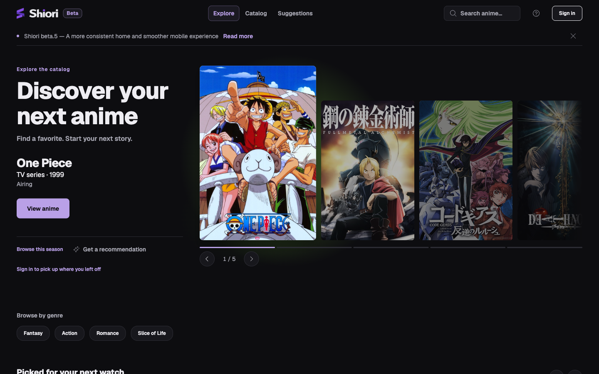
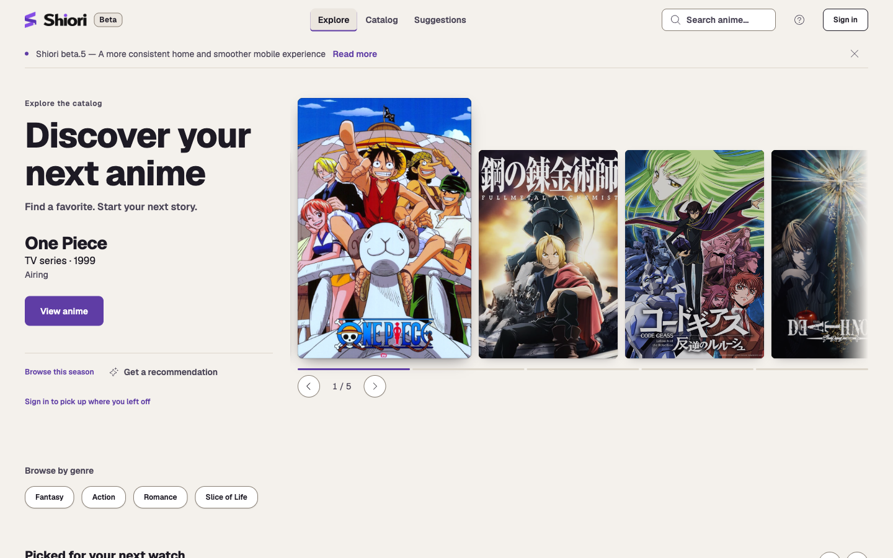
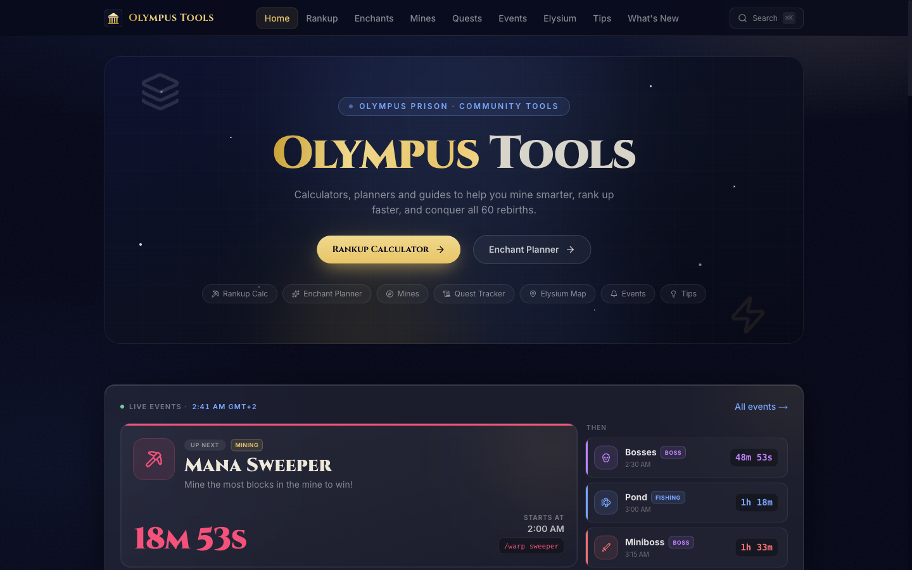

Understanding what happens underneath.
Python, asynchronous APIs and the decisions that make a backend understandable and maintainable.
I'm Giuseppe Casillo. I work with backend systems, cybersecurity and AI — and build open-source tools along the way.
I work with the Namirial Group in cybersecurity, specifically Public Key Infrastructure (PKI).
My personal work explores reusable frameworks, developer tooling and the experience of bringing a product online.
The projects below are where I put those ideas into practice.
Experience on LinkedInPython, asynchronous APIs and the decisions that make a backend understandable and maintainable.
Exploring CRUD in Python and Go through django-ninja-aio-crud and goninja, with two different approaches.
With Shiori, the work extends beyond code: interface, catalog, deployment and keeping a product running.
Python, Go, asynchronous APIs and code generation. Different tools for different constraints.
Explore the frameworksPKI is my professional focus within cybersecurity. I bring that attention to trust and clear boundaries into the way I approach systems.
Prompt engineering and agentic programming are part of my development practice, alongside implementation, review and verification.
PostgreSQL, Redis, Linux, Nginx and HAProxy are part of my toolkit. I also use Docker for local development and testing.
Vue, TypeScript and Tailwind CSS are part of the tools used in my projects, with AI assistance for frontend implementation.
A CRUD framework for Django Ninja, sync or async. Declare schemas, register a viewset and get a complete REST API.
from django.db import models from ninja_aio import ( ModelSerializer, SchemaConfig, ) class Article(ModelSerializer): title = models.CharField(max_length=200) class Schemas: create = SchemaConfig(fields=["title"]) update = SchemaConfig( optionals=[("title", str)], ) read = SchemaConfig(fields=["id", "title"])
from ninja_aio import NinjaAIO, APIViewSet from .models import Article api = NinjaAIO(title="Blog API") @api.viewset(model=Article) class ArticleViewSet(APIViewSet): pass
A different answer to CRUD: annotated Go structs become real source code you can read and commit.
type Story struct { ID uint Title string }
A personal space for anime discovery and tracking. Built from the catalog to the interface, and brought online.


One OpenAPI specification for mocking the parts of an API that aren't ready, and testing the parts that are.
A desktop password manager built with Electron, Vue 3 and TypeScript. Credentials live in encrypted local vault files and are not sent over the network.
Community-made calculators, planners and trackers for Olympus Prison on ManaCube.
